Hit or point decisions
Why this?
This is a collection of checker play problems from the middle game, where the decision is between hitting or making a point. This can often be a difficult choice, so I thought it would be useful to take a closer look.
We have five main positions, each with several variants, all are rolled out 1296 times; moves and cube decisions at 3-ply.
Position 1
In the first two contrasting variants, hitting with 21 is clearly right, for all the usual reasons: It gains in the race, gains initiative, cuts down on Black’s good numbers, leaves bad 6s from the bar.
Variation A
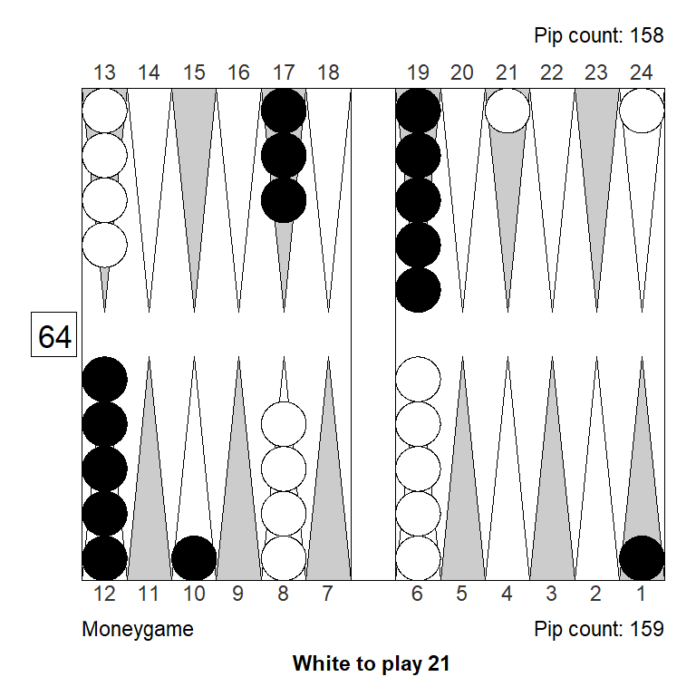
1. 13/10* eq:+0,138
Player: 52,70% (G:15,93% B:0,75%)
Opponent: 47,30% (G:11,61% B:0,60%)
2. 24/21 eq:+0,018 (-0,120)
Player: 49,69% (G:11,01% B:0,34%)
Opponent: 50,31% (G:7,46% B:0,27%)XGID=-a—-E-D-a-eD—c-e-A–A-:0:0:1:21:0:0:0:0:10
In the second position, either of the pointing plays are a lot better that hitting.
Variation B
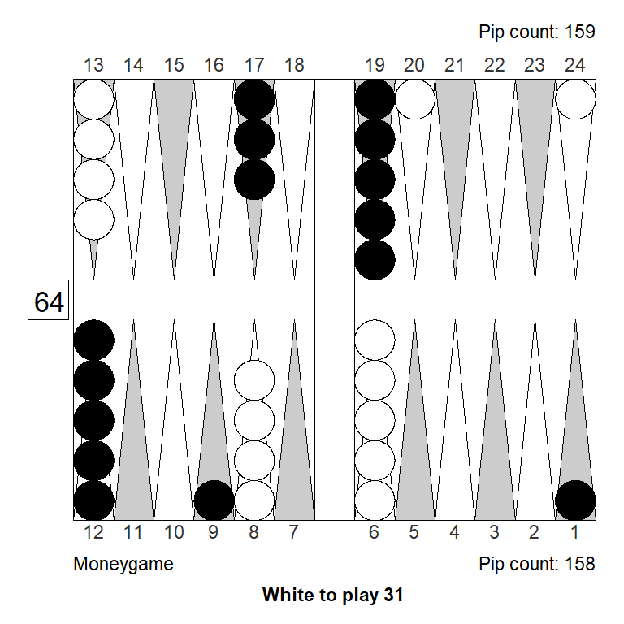
1. 8/5 6/5 eq:+0,239
Player: 54,79% (G:17,12% B:0,74%)
Opponent: 45,21% (G:9,91% B:0,37%)
2. 24/20 eq:+0,186 (-0,053)
Player: 53,47% (G:11,71% B:0,29%)
Opponent: 46,53% (G:5,87% B:0,24%)
3. Rollout² 13/9* eq:+0,134 (-0,105)
Player: 52,80% (G:16,03% B:0,75%)
Opponent: 47,20% (G:12,05% B:0,59%)Why the difference?
Let’s try to ignore the even stronger pointing play of 8/5 6/5 in variation B, and just compare the advanced anchor plays to the hitting plays.
Clearly, the 20-point is stronger than the 21-point, so that’s a long term reason why pointing is more attractive in variation B than in variation A: The point we get to make is better.
There’re also a related tactical reason: Leaving a blot on the 20-point in variation B gives Black nice, loose return hits with aces: 21, 31, 41, and 51 from the bar. In variation A the same aces are not nearly as comfortable after hitting. (The corresponding loose hits with 2s are not as clear and happy for Black.)
Another way of putting it: Hitting in variation A gives Black both poor 6s and aces from the bar; in variation B it is only 6s that are uncomfortable.
For these reasons, the defensive anchor works better that hitting i variation A but not in variation B.
As mentioned, B offers White an even stronger option: 8/5 6 /5. That’s better because the 5-point is also a great point to make, and it’s harder since it’s not slotted like the 20-point is. So it makes sense to take the opportunity now, while the need for defense is not super urgent.
Position 2
Variation A
1. 23/20 6/5 eq:+0,557
Player: 62,59% (G:18,02% B:0,71%)
Opponent: 37,41% (G:6,52% B:0,28%)
2. 13/9* eq:+0,414 (-0,143)
Player: 59,06% (G:20,49% B:1,62%)
Opponent: 40,94% (G:11,74% B:0,61%)XGID=-b—BD-Ca–cD—bbcA-bA–:0:0:1:13:0:0:0:0:10
In position 2A, making the point with 23/20 6/5 is far ahead of the hitting play, 13/9*, for several reasons. Of course, the anchor is super strong, and a permanent asset. But that’s always the case, and often hitting is stronger anyway. In this position specifically:
- The non-hitting play is nice and smooth
- The non-hitting play leaves no blots, avoiding 54 and 63 fly shots
- Hitting lets Black make an advanced anchor with 43 and 32
- Hitting lets Black return hit loose with 41 and 31 (much like in the previous position)
Variation B
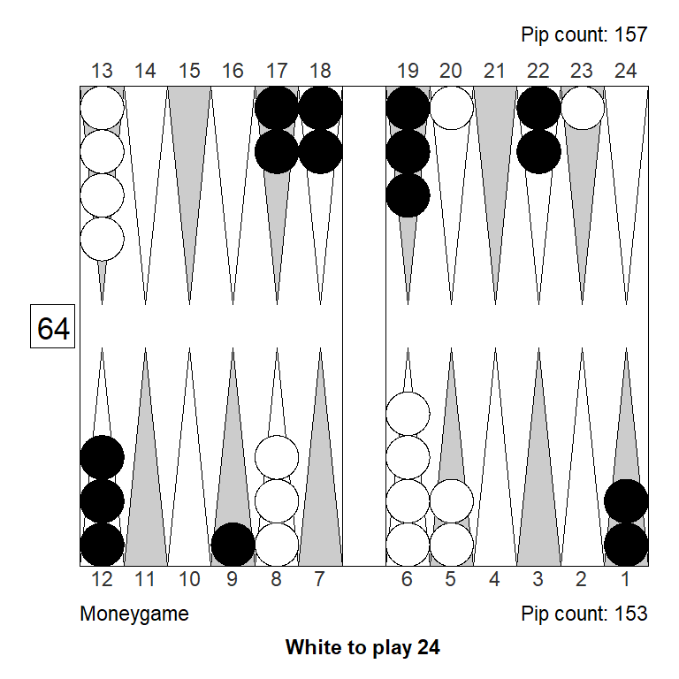
1. 8/4 6/4 eq:+0,472
Player: 60,45% (G:21,72% B:1,62%)
Opponent: 39,55% (G:12,06% B:0,47%)
2. 23/21 13/9* eq:+0,423 (-0,049)
Player: 59,54% (G:20,22% B:1,44%)
Opponent: 40,46% (G:11,35% B:0,58%)
3. 13/11 13/9* eq:+0,399 (-0,072)
Player: 58,74% (G:21,36% B:1,74%)
Opponent: 41,26% (G:12,68% B:0,93%)XGID=-b—BD-Ca–cD—bbcA-bA–:0:0:1:24:0:0:0:0:10
Same position, different roll, now with a choice of making the 4-point or hitting. Pointing is still right, but with a smaller margin, since the 4-point is not as urgent, and not as important as the 20-point anchor in the previous position.
Variation C
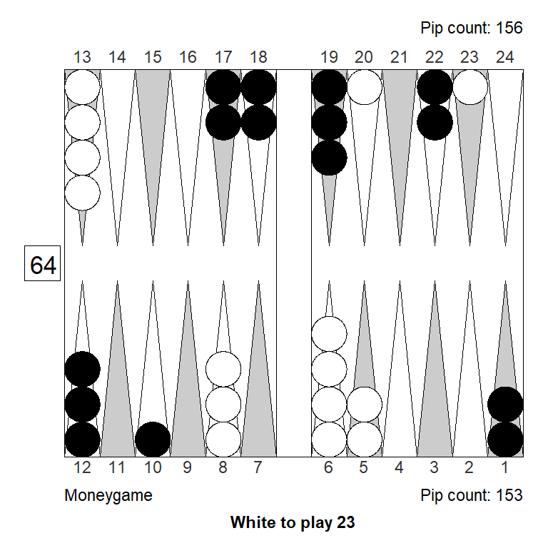
1. 23/21 13/10* eq:+0,457
Player: 60,45% (G:19,87% B:1,57%)
Opponent: 39,55% (G:11,44% B:0,58%)
2. 13/11 13/10* eq:+0,424 (-0,033)
Player: 59,11% (G:21,10% B:1,79%)
Opponent: 40,89% (G:12,23% B:0,86%)
3. 23/20 8/6 eq:+0,420 (-0,037)
Player: 59,11% (G:17,36% B:0,61%)
Opponent: 40,89% (G:7,19% B:0,30%)
4. 13/10* 10/8 eq:+0,403 (-0,054)
Player: 59,11% (G:19,61% B:1,33%)
Opponent: 40,89% (G:11,19% B:0,47%)
5. 23/20 13/11 eq:+0,397 (-0,060)
Player: 58,87% (G:16,95% B:0,67%)
Opponent: 41,13% (G:7,76% B:0,28%)XGID=-b—BD-C-a-cD—bbcA-bA–:0:0:1:23:0:0:0:0:10
Almost the same position; this time the anchoring play is a little awkward, and that is enough to make hitting correct, by a small amount.
Variation D
1. 9/4 6/4 eq:+0,423
Player: 59,38% (G:20,66% B:1,37%)
Opponent: 40,62% (G:12,40% B:0,56%)
2. 20/15 13/11* eq:+0,416 (-0,008)
Player: 60,01% (G:20,37% B:1,57%)
Opponent: 39,99% (G:13,02% B:0,89%)
3. 13/8 13/11* eq:+0,389 (-0,035)
Player: 58,76% (G:20,90% B:1,73%)
Opponent: 41,24% (G:12,24% B:0,85%)XGID=-b—BD-BA-acD—bbcA-bA–:0:0:1:25:0:0:0:0:10
Variation D is a photo finish: The pointing play cleans up a blot and is super smooth, the hitting play unstacks the mid and is very flexible. The hit has all the usual benefits, while the inner point takes a lot of the sting out of any loose hit from Black.
Bottom line: The two plays are basically equal.
Variation E
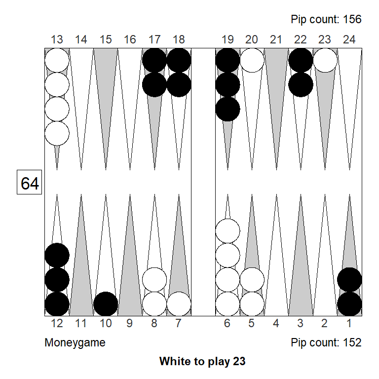
1. 23/20 7/5 eq:+0,515
Player: 61,14% (G:19,33% B:0,67%)
Opponent: 38,86% (G:6,94% B:0,29%)
2. 7/4 6/4 eq:+0,435 (-0,080)
Player: 59,61% (G:21,34% B:1,48%)
Opponent: 40,39% (G:12,48% B:0,56%)
3. 13/10* 7/5 eq:+0,402 (-0,112)
Player: 58,53% (G:21,25% B:1,69%)
Opponent: 41,47% (G:11,84% B:0,68%)
4. 13/10* 10/8 eq:+0,361 (-0,154)
Player: 57,81% (G:19,84% B:1,53%)
Opponent: 42,19% (G:11,58% B:0,55%)XGID=-b—BDAB-a-cD—bbcA-bA–:0:0:1:23:0:0:0:0:10
In variation E, if White plays 7/5 with the two, the best 3 is 23/20, making the achor, for the same reasons as seen earlier. The 20-point is simple very valueable, and Black would like to hit loose there, so making it takes priority. The play is also quite flexible, so beats hitting.
Between the two pointing plays, the anchor wins for the same reason as before: It is the better and more urgent point to make; the 4-point is likely to come later.
Variation F
1. 23/20 13/11* eq:+0,464
Player: 60,81% (G:19,52% B:1,50%)
Opponent: 39,19% (G:11,05% B:0,49%)
2. 23/21 13/10 eq:+0,433 (-0,030)
Player: 59,47% (G:18,57% B:0,73%)
Opponent: 40,53% (G:8,19% B:0,34%)
3. 13/10 13/11* eq:+0,404 (-0,059)
Player: 59,19% (G:20,57% B:1,50%)
Opponent: 40,81% (G:12,62% B:0,86%)
4. 13/11* 11/8 eq:+0,398 (-0,066)
Player: 58,75% (G:19,49% B:1,25%)
Opponent: 41,25% (G:11,55% B:0,50%)XGID=-b—BD-C–acD—bbc-AbA–:0:0:1:23:0:0:0:0:10
When the point to make is a slightly inferior anchor, the scales tip again and hitting is best, by a small amount, noting that 23/21 13/11* makes a bid for the better anchor while hitting.
Position 3
Variation A
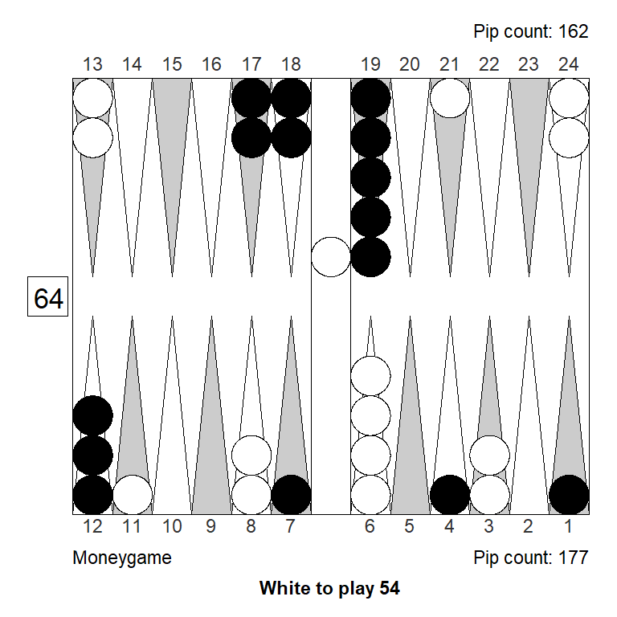
1. Bar/20 24/20 eq:-0,171
Player: 45,64% (G:12,63% B:0,53%)
Opponent: 54,36% (G:14,37% B:0,59%)
2. Bar/20 11/7* eq:-0,209 (-0,038)
Player: 44,86% (G:13,48% B:0,63%)
Opponent: 55,14% (G:16,50% B:1,14%)XGID=-a-Ba-DaB–AcB—bbe-A–BA:0:0:1:54:0:0:0:0:10
Variation B
1. Bar/21 11/8 eq:-0,272
Player: 43,03% (G:11,62% B:0,43%)
Opponent: 56,97% (G:14,27% B:0,72%)
2. Bar/22 11/7* eq:-0,284 (-0,013)
Player: 43,33% (G:12,70% B:0,61%)
Opponent: 56,67% (G:17,81% B:1,21%)
3. Bar/21 24/21 eq:-0,286 (-0,015)
Player: 42,86% (G:11,61% B:0,49%)
Opponent: 57,14% (G:15,66% B:0,69%)XGID=-a-Ba-DaB–AcB—bbe-A–BA:0:0:1:34:0:0:0:0:10
Variation C

1. Bar/21 9/4* eq:-0,181
Player: 45,16% (G:14,43% B:0,70%)
Opponent: 54,84% (G:15,73% B:0,92%)
2. Bar/20 24/20 eq:-0,205 (-0,024)
Player: 44,93% (G:12,75% B:0,55%)
Opponent: 55,07% (G:14,61% B:0,66%)XGID=-a-Ba-DaBA–cB—bbe-A–BA:0:0:1:45:0:0:0:0:10
Variation D
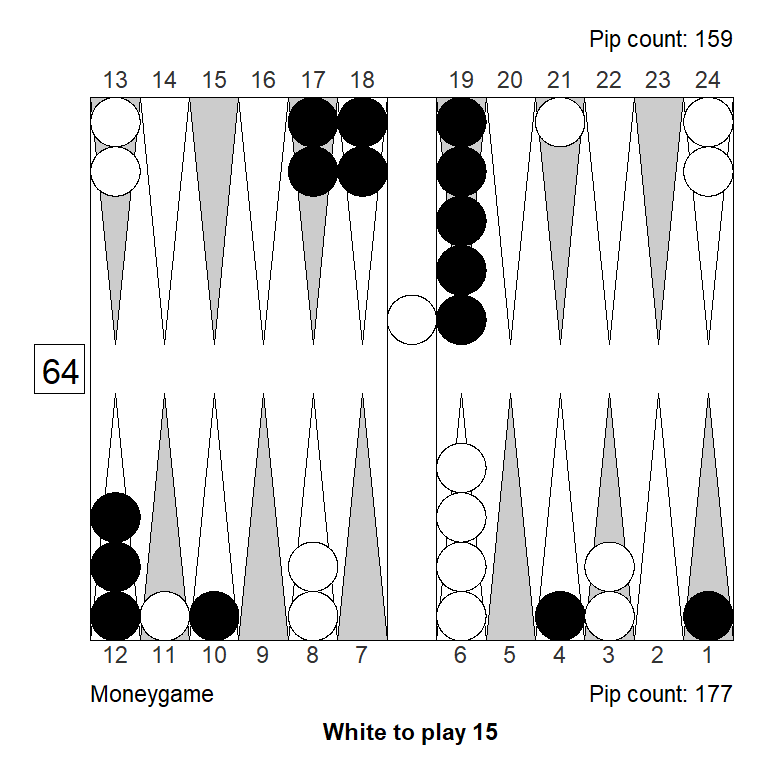
1. Bar/20 11/10* eq:-0,198
Player: 45,33% (G:13,20% B:0,74%)
Opponent: 54,67% (G:16,62% B:1,20%)
2. Bar/20 21/20 eq:-0,258 (-0,060)
Player: 43,49% (G:12,44% B:0,51%)
Opponent: 56,51% (G:15,10% B:0,89%)XGID=-a-Ba-D-B-aAcB—bbe-A–BA:0:0:1:15:0:0:0:0:10
Position 4
Variation A
1. 24/18 13/12* eq:+0,054
Player: 51,13% (G:9,31% B:0,40%)
Opponent: 48,87% (G:9,61% B:0,31%)
2. 13/7 13/12* eq:-0,010 (-0,064)
Player: 50,54% (G:10,34% B:0,44%)
Opponent: 49,46% (G:12,37% B:0,60%)
3. 13/7 8/7 eq:-0,019 (-0,073)
Player: 49,12% (G:9,23% B:0,37%)
Opponent: 50,88% (G:10,49% B:0,31%)
4. 13/12* 12/6 eq:-0,041 (-0,095)
Player: 48,74% (G:9,61% B:0,31%)
Opponent: 51,26% (G:9,98% B:0,37%)^XGID=—-b-E-C—aD–be-eB—A-:0:0:1:16:0:0:0:0:10 ^
Variation B
1. 11/5 6/5 eq:+0,093
Player: 51,96% (G:10,47% B:0,35%)
Opponent: 48,04% (G:9,26% B:0,29%)
2. 24/18 13/12* eq:+0,062 (-0,030)
Player: 51,75% (G:9,27% B:0,35%)
Opponent: 48,25% (G:9,71% B:0,37%)
3. 13/12* 12/6 eq:-0,026 (-0,119)
Player: 49,23% (G:9,90% B:0,34%)
Opponent: 50,77% (G:10,23% B:0,35%)XGID=—-b-E-C–AaC–be-eB—A-:0:0:1:16:0:0:0:0:10
Variation C
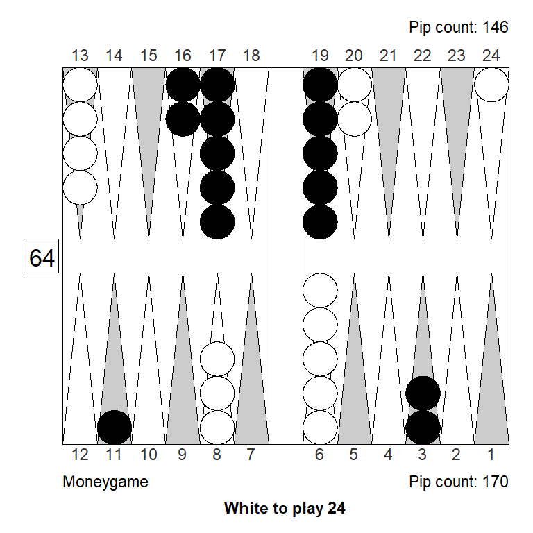
1. 24/20 13/11* eq:+0,218
Player: 55,42% (G:10,96% B:0,47%)
Opponent: 44,58% (G:9,21% B:0,32%)
2. 8/4 6/4 eq:+0,203 (-0,015)
Player: 54,90% (G:12,57% B:0,50%)
Opponent: 45,10% (G:10,05% B:0,38%)
3. 13/11* 11/7 eq:+0,105 (-0,112)
Player: 52,73% (G:12,78% B:0,55%)
Opponent: 47,27% (G:12,03% B:0,50%)
4. 13/9 13/11* eq:+0,091 (-0,127)
Player: 52,50% (G:13,20% B:0,59%)
Opponent: 47,50% (G:13,01% B:0,67%)XGID=—b–E-C–a-D–be-eB—A-:0:0:1:24:0:0:0:0:10
Variation D
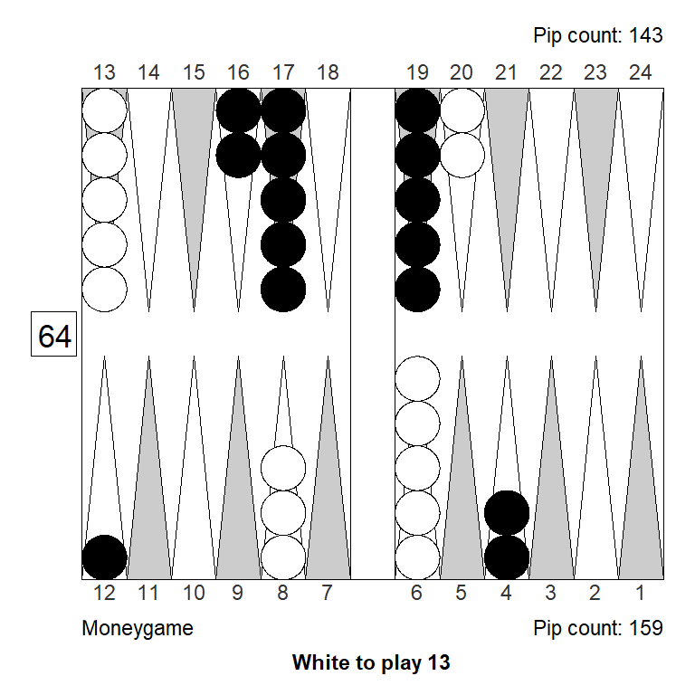
1. 13/10 13/12* eq:+0,107
Player: 52,96% (G:9,55% B:0,33%)
Opponent: 47,04% (G:9,00% B:0,31%)
2. 13/12* 12/9 eq:+0,087 (-0,021)
Player: 52,20% (G:9,28% B:0,33%)
Opponent: 47,80% (G:8,99% B:0,34%)
3. 13/12* 6/3 eq:+0,084 (-0,023)
Player: 52,12% (G:9,34% B:0,39%)
Opponent: 47,88% (G:9,77% B:0,35%)
4. 8/5 6/5 eq:+0,080 (-0,028)
Player: 51,25% (G:8,53% B:0,30%)
Opponent: 48,75% (G:7,17% B:0,21%)XGID=—-b-E-C—aE–be-eB—–:0:0:1:13:0:0:0:0:1
Variation E
1. 13/12* 6/3 eq:-0,072
Player: 48,37% (G:10,66% B:0,42%)
Opponent: 51,63% (G:13,49% B:0,54%)
2. 8/5 6/5 eq:-0,080 (-0,008)
Player: 47,75% (G:10,86% B:0,41%)
Opponent: 52,25% (G:12,35% B:0,53%)
3. 24/21 13/12* eq:-0,101 (-0,030)
Player: 47,74% (G:9,00% B:0,28%)
Opponent: 52,26% (G:10,85% B:0,38%)
4. 13/12* 12/9 eq:-0,105 (-0,033)
Player: 47,46% (G:10,25% B:0,37%)
Opponent: 52,54% (G:12,58% B:0,46%)
5. 13/10 13/12* eq:-0,111 (-0,040)
Player: 47,47% (G:10,25% B:0,40%)
Opponent: 52,53% (G:13,36% B:0,55%)XGID=—-b-F-B—aD–be-eB—A-:0:0:1:13:0:0:0:0:10
Variation F
1. 8/5 6/5 eq:+0,098
Player: 52,47% (G:11,29% B:0,38%)
Opponent: 47,53% (G:11,82% B:0,37%)
2. 13/10 13/12* eq:+0,075 (-0,023)
Player: 51,85% (G:11,18% B:0,47%)
Opponent: 48,15% (G:12,97% B:0,49%)
3. 24/21 13/12* eq:+0,025 (-0,073)
Player: 50,83% (G:9,78% B:0,37%)
Opponent: 49,17% (G:11,41% B:0,37%)
4. 13/12* 12/9 eq:+0,007 (-0,091)
Player: 50,73% (G:11,02% B:0,44%)
Opponent: 49,27% (G:13,15% B:0,55%)XGID=—-b-D-C—aE–be-eB—A-:0:0:1:13:0:0:0:0:10
Variation G
1. 13/10 13/12* eq:+0,139
Player: 53,55% (G:9,67% B:0,38%)
Opponent: 46,45% (G:9,97% B:0,35%)
2. 13/12* 12/9 eq:+0,083 (-0,056)
Player: 52,21% (G:9,68% B:0,38%)
Opponent: 47,79% (G:10,14% B:0,33%)
3. 8/5 6/5 eq:+0,054 (-0,085)
Player: 50,80% (G:8,65% B:0,33%)
Opponent: 49,20% (G:8,80% B:0,25%)
4. 13/12* 6/3 eq:+0,035 (-0,104)
Player: 51,30% (G:9,36% B:0,33%)
Opponent: 48,71% (G:11,12% B:0,37%)XGID=—-b-D-C—aF–be-eB—–:0:0:1:13:0:0:0:0:1
Position 5
Variation A
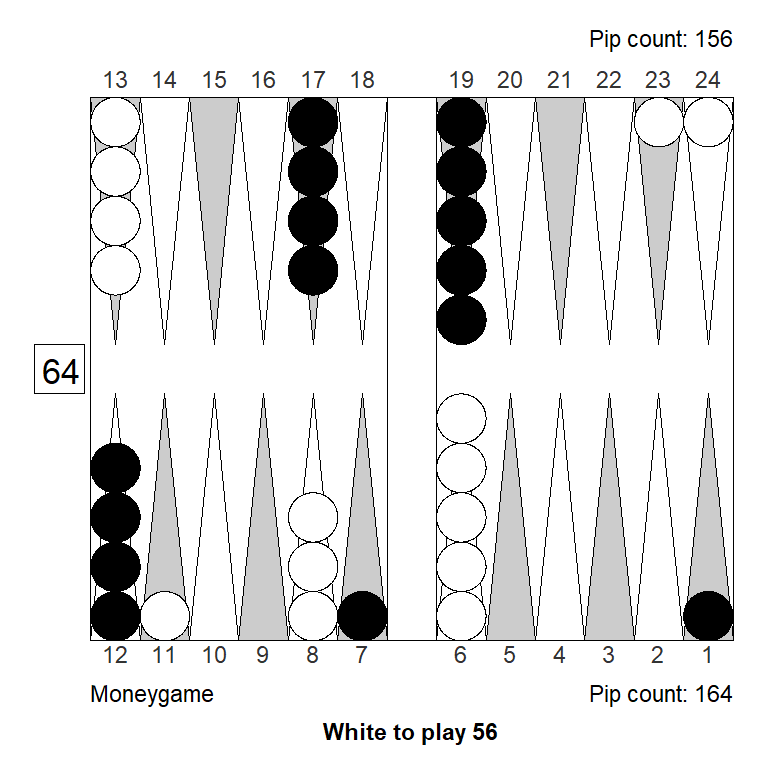
1. 13/7* 6/1* eq:+0,098
Player: 51,88% (G:17,84% B:0,49%)
Opponent: 48,12% (G:13,89% B:0,76%)
2. 24/18 23/18 eq:+0,002 (-0,096)
Player: 49,85% (G:9,63% B:0,30%)
Opponent: 50,15% (G:9,14% B:0,32%)
3. 13/8 13/7* eq:-0,020 (-0,118)
Player: 49,28% (G:14,77% B:0,63%)
Opponent: 50,72% (G:14,47% B:0,71%)XGID=-a—-EaC–AdD—d-e—AA-:0:0:1:56:0:0:0:0:10
Variation B
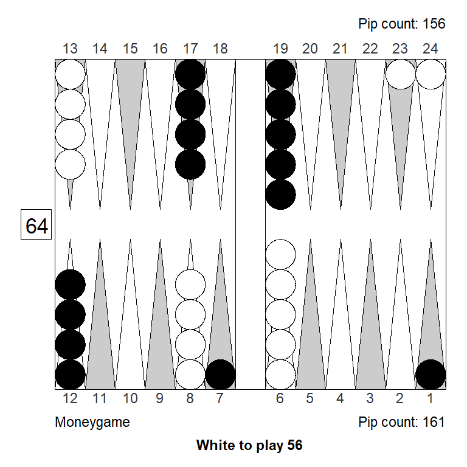
1. 24/18 23/18 eq:+0,117
Player: 53,05% (G:9,04% B:0,26%)
Opponent: 46,95% (G:7,06% B:0,25%)
2. 13/7* 6/1* eq:+0,108 (-0,009)
Player: 51,95% (G:17,39% B:0,49%)
Opponent: 48,05% (G:12,98% B:0,62%)XGID=-a—-EaD—dD—d-e—AA-:0:0:1:56:0:0:0:0:10
Variation C
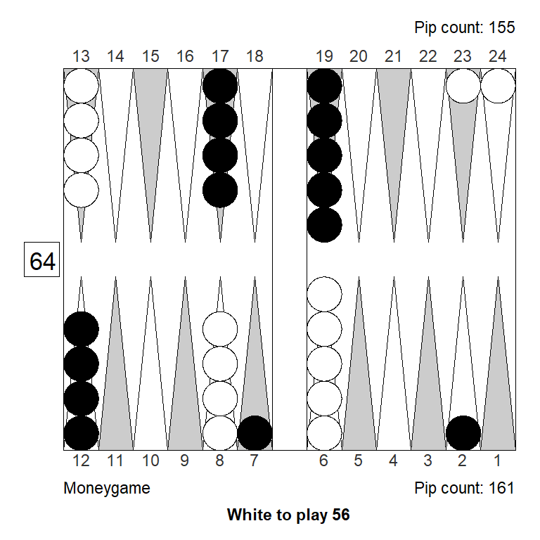
1. 24/18 23/18 eq:+0,148
Player: 53,61% (G:9,59% B:0,29%)
Opponent: 46,39% (G:7,46% B:0,24%)
2. 13/7* 7/2* eq:+0,065 (-0,083)
Player: 50,99% (G:15,87% B:0,58%)
Opponent: 49,01% (G:12,65% B:0,54%)XGID=–a—EaD—dD—d-e—AA-:0:0:1:56:0:0:0:0:10
Variation D
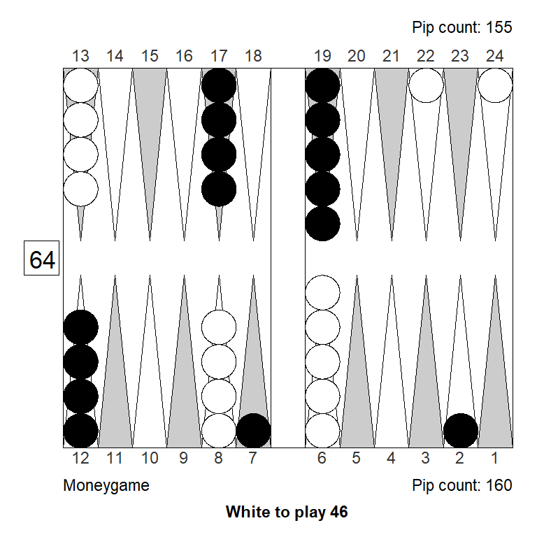
1. 8/2* 6/2 eq:+0,197
Player: 53,51% (G:18,40% B:0,57%)
Opponent: 46,49% (G:10,13% B:0,45%)
2. 13/7* 6/2* eq:+0,161 (-0,035)
Player: 53,09% (G:17,54% B:0,62%)
Opponent: 46,91% (G:12,22% B:0,54%)
3. 24/18 22/18 eq:+0,144 (-0,053)
Player: 53,39% (G:9,69% B:0,26%)
Opponent: 46,61% (G:7,33% B:0,21%)XGID=–a—EaD—dD—d-e–A-A-:0:0:1:46:0:0:0:0:10